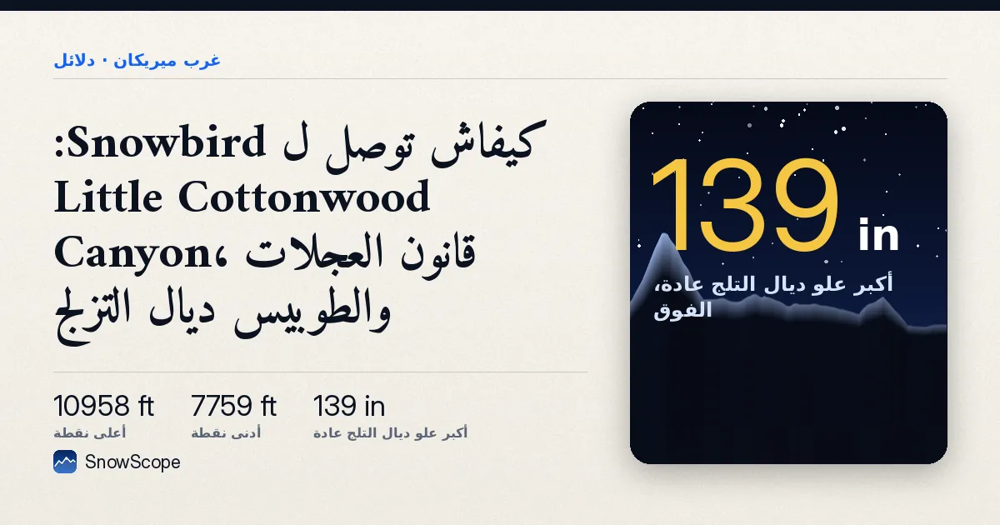
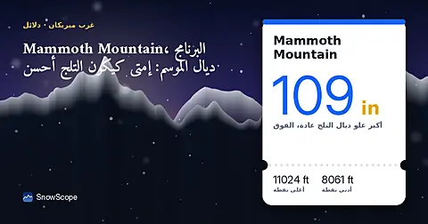

كيفاش توصل ل Snowbird: Little Cottonwood Canyon، قانون العجلات والطوبيس ديال التزلج
Snowbird كاينة وحدها ف الطرف ديال Little Cottonwood Canyon (SR-210)، اللي كاتقسمها مع Alta. الطريق الواحدة ديال الواد مسرعة ف الايام الفاضحة و بطيئة ديما كاتجي العواصف، علاه التواير ديالك والوقت اللي غادي تخرج فيه والتوقعات ديال الجو هوما اللي غادي يحددو الطريق فيك اكثر من المسافة.
شوف توقعات التلج مباشرة ديال Snowbird فالتطبيق ديال SnowScopeالعلو ديال التلج، التنبيهات والخريطة 3D، فابور.

فين كاينة Snowbird
Snowbird كاينة على حد الكتاب 29 ميل (47 كم) ف الجنوب الشرقي ديال مطار Salt Lake City International و 24 ميل (39 كم) من المركز ديال المدينة. فم الواد كاتبدا قرب Sandy، 4 ميل (6 كم) ف الغرب. دابا تدخل الواد على SR-210، كاين طريق واحدة فقط دخول و خروج، علاه UDOT كادير الحذر للسواقين بلي الطريق طريق ميتة ف الشتاء. جيب الحاجات و الديزل ديالك ليهاد النهار ولا رايح تسواق.
الصعود الرأسي من فم الواد للمحطة شديد بزاف: حد الكتاب 1,600 قدم (488 م) ف هاد الميلات الاخيرة. وقت الدريفة يتعلق بالجو و الزحمة، ما يتعلقش بالمسافة وحدها.

القانون ديال الجر: كاتطبق فاش و شنو التواير اللي تحتاج
كاتجي المصابيح ديال UDOT ديال الوميض فتح عند المدخل ديال الواد، القانون ديال الجر يصير ل SR-210 و SR-190 كاعين. UDOT قادرة تفرضو حتى 24 ساعة قبل اللي تجي العاصفة. التواير كاملة حتاج تكون فيها 5/32 انش (4 ملم) على الاقل ديال الحز.
ولا كان السيارة ديالك فيها رباعي الدفع أو دفع الكل الأربع، تحتاج تواير شتويين (ماركة M+S) على الأربع كاروش. ولا كانت ثنائي الدفع، فاش بزاف تركب تواير شتويين ماركة (رمز 3PMSF) على الأربع كاروش، أو تجيب شناسل أو جرافات تلج لاثنين ديال كاروش الجر. السيارات ديال الكراء من Salt Lake City غالبا كايكون فيهم تواير فصول التمام: شوف الماركة ديال التاير قبل تحجز، أو اختار الطوبيس بدال هاك.
خلي السيارة: خط UTA 994 و طويبيس Canyon Service
خط UTA 994 و Canyon Service كاتدير طويبيسات مباشرة ل Little Cottonwood Canyon ل Snowbird و Alta. الجدول ديال طوبيس التلج غالبا كايكون من أول ديسمبر حتى نص ابريل. ولا كانت المحطات فتحو مبكري ف الموسم، UTA قادرة تبدا الطويبيسات بدري اكتر. استعمل تطبيق Transit أو زور الموقع ديال UTA باش تشوف الجدول قبل تخرج.
يوم بودرة واحد مجموع، الطوبيس حل مشكلتين ف الوقت نفسو: تحيد الطابور ديال البركينج، و تتجنب الضغط ديال دريفة وحدك ف الزحام ديال العاصفة. الطوبيس كايخرج من محطة downtown ديال Salt Lake City و من المطار.
قبل ما تخرج: شوف حالة الطريق
UDOT كادير نشرة حية ل SR-190 و SR-210 فيها الإغلاقات و قواعد الجر و لينكات ديال كاميرات الطريق. ولا ما كاين تنبيه، الطريق مفتوحة وما كاين حد المنع. شوف النشرة قبل ما تخرج من Salt Lake City، و شوف فاش تهبط بعد الزوال.
الطريق الواحدة ديال الواد كاتتعبات بزاف ف الثلج الثقيل. تخرج مبكري يوم عاصفة ما كايشي بزاف على الراحة: شيء يتعلق بلا تعطل أو تتاخر لساعات بزاف.
علاش الواد يستاهل الجهد
الجائزة ديال الصعود ل Little Cottonwood Canyon ب السيارة أو الطوبيس هي العلو. ف نص الجبل، حد الكتاب 9,357 قدم (2,852 م)، العلو ديال التلج الطبيعي عبر الشتوات اللي فاتو كان 96 انش (244 سم). القاعدة كاينة أسفل، ل 7,760 قدم (2,365 م)، فين الطبيعي الأعظم كان 52 انش (133 سم). التلج كايبقى ف الأرض حد الكتاب 220 نهار كل شتاء ف نص الجبل، عادة أعمق ف مارس.
الشتاء اللي فات (2025-26) كان ناشف: نص الجبل وصل غتا 56 انش (143 سم). بلاكة ف شتاء عادي، الواد كاتاخد العواصف ديال المحيط الهادي و كاتحتفظ بالتلج علي. الصعود ديال الارتفاع اللي كاتديرو وانت طالع يهمك—الجهة الفوقانية ل 10,961 قدم (3,340 م) كاتشوف طبيعي أعظم ديال 139 انش (352 سم).
نصايح للي كيتزلجو
- شوف نشرة حالة Cottonwood Canyons ديال UDOT ف التيليفون ديالك قبل ما تسواق لفوق و قبل ما تهبط. النشرة الحية أحسن من التوقعات.
- التواير أهم من رباعي الدفع. ثنائي الدفع مع تواير شتويين أحسن من رباعي الدفع مع تواير فصول التمام ولا طبقو قواعد الجر.
- يوم بودرة أو ثلج ثقيل، خد الطوبيس. غادي توصل أرقع، البركينج أسهل، و غادي ساعد الطريق ديال الواد تمشي أسرع.
- خرج من الوادي مبكري يوم عاصفة. الطريق الواحدة ديال الواد تبقى بطيئة ف ساعة واحدة ديال ثلج ثقيل.
- ولا رايح ل البادية من الواد، شوف نشرة الانهيارات ديال مركز Utah Avalanche أولا.
على هاد الأرقام
العلو ديال التلج فالمحطات هو أكثر تلج فالجهة الفوقانية فالتاريخ المكتوب؛ هادو تقديرات لمنطقة، ماشي قياس فنقطة وحدة. التوقعات يمكن تتبدل. ديما شوف النشرة الرسمية ديال الانهيارات قبل ما تخرج من البيست.
النشرات الرسمية ديال الانهيارات: Utah Avalanche Center
كيفاش تستاشهد بهاد المقال
للبحث، التعليم ولا الصحافة: الأرقام والرسومات تقدر تعاود تخدم بيهم بحرية تحت CC BY 4.0 مع هاد الاستشهاد.
SnowScope (2026), كيفاش توصل ل Snowbird: Little Cottonwood Canyon، قانون العجلات والطوبيس ديال التزلج, https://snowscope.app/blog/ar/2026/11/how-to-get-to-snowbird-little-cottonwood-canyon.html, تشاف ف 2026-11-09
SnowScope (Atlas Labs). (2026, November 9). كيفاش توصل ل Snowbird: Little Cottonwood Canyon، قانون العجلات والطوبيس ديال التزلج. SnowScope snow reports. https://snowscope.app/blog/ar/2026/11/how-to-get-to-snowbird-little-cottonwood-canyon.html
BibTeX
@misc{snowscope2026howtogettosnowbirdlittle,
author = {{SnowScope (Atlas Labs)}},
title = {كيفاش توصل ل Snowbird: Little Cottonwood Canyon، قانون العجلات والطوبيس ديال التزلج},
year = {2026},
month = nov,
howpublished = {\url{https://snowscope.app/blog/ar/2026/11/how-to-get-to-snowbird-little-cottonwood-canyon.html}},
note = {Published 2026-11-09 18:47 UTC; accessed 2026-11-09}
}· CC BY 4.0 · الطريقة، الداتا والأدوات →
Snowbird: التلج والحرارة حسب العلو، هاد الشتا مقارنة مع اللي فاتت (الأدوات) →
تابع Snowbird
فابور: ميساج ملي يجي التلج، والتوقعات كل صباح.
تقارير أخرى ديال التلج

خطط ل Mammoth Mountain حسب الموسم: تقريبا 93 in (235 cm) فالقمة العادية فالوسط ف 46 شتوة اللي فاتو، مارس أكثر شهر، ربيع طويل وشتوات كتبدل.

الخرافات على Jackson Hole مقارنة مع الحقائق والتاريخ ديالنا: تقريبا 80 in (204 cm) فالقمة العادية فالوسط ف 46 شتوة اللي فاتو، بلا نقصة واضحة.

Big Sky فـ Montana ساهلة تتخيلها: 5,850 acres تحت Lone Peak، وتلج تقريبا خمسة ديال المرات كثر قريب من القمة على التحت ف 46 شتوة اللي فاتو.